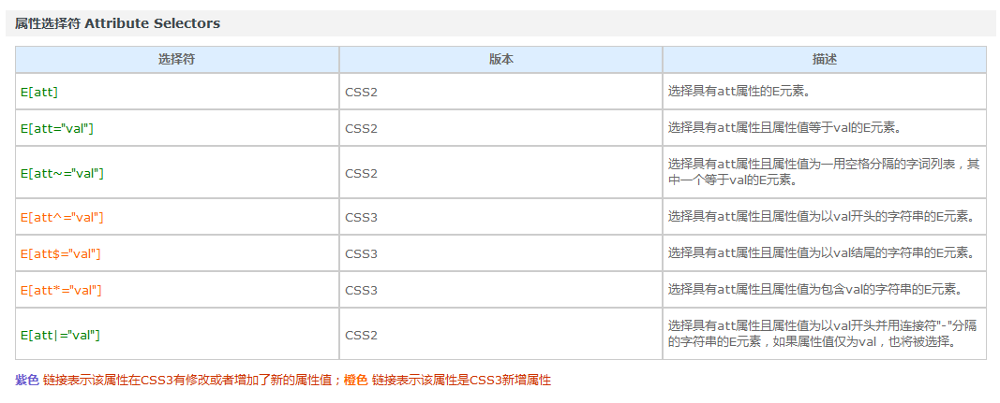

CSS3在CSS2基础上，增强或新增了许多特性， 弥补了CSS2的众多不足之处，使得Web开发变得更为高效和便捷。
CSS3的现状
浏览器支持程度不够好，有些需要添加私有前缀
移动端支持优于PC端
不断改进中
应用相对广泛
应对的策略：渐进增强
（1）坚持渐进增强的原则：让低版本浏览器能正常访问页面，高版本的浏览器用户体验更好。【重要】
比如说，同样是一个头像，可能在低版本的浏览器中，头像方的；在高版本的浏览器中，头像是圆的。
（2）考虑用户群体。
（3）遵照产品的方案。
参考链接：
渐进增强 VS 优雅降级 | 简书
渐进增强和优雅降级之间的不同（面试题目）
浏览器的版本问题
由于CSS3普遍存在兼容性问题，为了避免因兼容性带来的干扰，浏览器的建议版本为：
Chrome浏览器 version 46+
Firefox浏览器 firefox 42+
在查看CSS参考手册时，需要注意以下符号：
我们之前学过 CSS 的选择器，比如：
div 标签选择器
.box 类名选择器
#box id选择器
div p 后代选择器
div.box 交集选择器
div,p,span 并集选择器
div>p 子代选择器
* : 通配符
div+p: 选中div后面相邻的第一个p
div~p: 选中的div后面所有的p
格式：

伪类选择器的标志性符号是 :。
CSS中有一些伪类选择器，比如:link、:active、:visited、:hover，这些是动态伪类选择器。
CSS3又新增了其它的伪类选择器。这一小段，我们来学习CSS3中的结构伪类选择器：即通过结构来进行筛选。
选择单数偶数列nth-child(2n)
li:nth-child(-n+5)，则表示前5个 li
伪元素选择器的标志性符号是 ::。
E::before 设置在 元素E 前面（依据对象树的逻辑结构）的内容，配合content属性一起使用。
E::after 设置在 元素E 后面（依据对象树的逻辑结构）的内容，配合content属性一起使用。
E:after、E:before 在旧版本里是伪类，在 CSS3 这个新版本里是伪元素。新版本里，E:after、E:before会被自动识别为E::after、E::before，按伪元素来对待，这样做的目的是用来做兼容处理。
demo
以下例子中，通过伪类在span得前后分别增加内容
生命壹号
需要注意：
1. 通过伪元素选择器，就可以添加出类似于span标签的效果（记得要结合 content 属性使用）。
2. 通过这两个属性添加的伪元素，是行内元素，需要转换成块元素才能设置宽高。
E::first-letter 设置元素 E 里面的第一个字符的样式。
E::first-line 设置元素 E 里面的第一行的样式。
E::selection 设置元素 E 里面被鼠标选中的区域的样式（一般设置颜色和背景色）。
demo
以下例子中，通过伪类E::first-letter 调整每个首字母大小